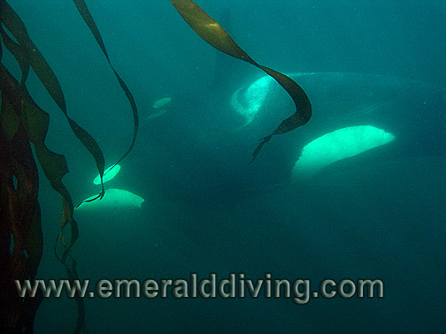
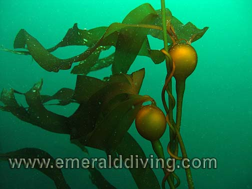
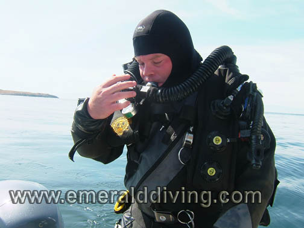
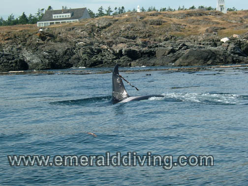
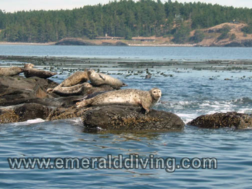

<!doctype html>
<html>
<head>
<meta charset="utf-8">
<title>Emerald Diving:  SJ 8.08</title>
<meta name="generator" content="WYSIWYG Web Builder - http://www.wysiwygwebbuilder.com">
<link href="Emerald_Diving.css" rel="stylesheet">
<link href="San_Juan_08.23.08.css" rel="stylesheet">
<script>
function onChangeGoMenu1(){var a=document.getElementById('GoMenu1-select'),b=a.options[a.selectedIndex].value,c=a.options[a.selectedIndex].className;a.selectedIndex=0;a.blur();b&&(NewWin=window.open(b,c),window.NewWin.focus())};
</script>
<link rel="canonical" href="https://pnwdiving.com/emerald-diving/San_Juan_08.23.08.html">
</head>
<body>
<script>
var gaJsHost = (("https:" == document.location.protocol) ? "https://ssl." : "http://www.");
document.write(unescape("%3Cscript src='" + gaJsHost + "google-analytics.com/ga.js' type='text/javascript'%3E%3C/script%3E"));
</script>
<script>
try {
var pageTracker = _gat._getTracker("UA-15987748-1");
pageTracker._trackPageview();
} catch(err) {}</script>

<div id="container">
<div id="wb_Shape1" style="position:absolute;left:0px;top:0px;width:1050px;height:3397px;z-index:19;">
</div>
<div id="wb_Shape2" style="position:absolute;left:186px;top:92px;width:850px;height:3269px;z-index:20;">
</div>
<div id="wb_Text1" style="position:absolute;left:155px;top:3362px;width:279px;height:14px;text-align:center;z-index:21;">
<span style="color:#005500;font-family:Arial;font-size:11px;">&#0169;2010 Emerald Diving, All Rights Reserved</span></div>
<div id="wb_Text12" style="position:absolute;left:294px;top:2610px;width:155px;height:46px;text-align:justify;z-index:22;">
<span style="color:#C0C0C0;font-family:Arial;font-size:13px;"><br><br></span></div>
<div id="wb_MasterPage2" style="position:absolute;left:4px;top:2px;width:1006px;height:2656px;z-index:23;">
<div id="wb_Text5" style="position:absolute;left:293px;top:2610px;width:155px;height:46px;text-align:justify;z-index:13;">
<span style="color:#C0C0C0;font-family:Arial;font-size:13px;"><br><br></span></div>
<div id="wb_Text3" style="position:absolute;left:229px;top:4px;width:657px;height:60px;z-index:14;">
<span style="color:#005500;font-family:Impact;font-size:48px;">Dive Reports</span></div>
<div id="wb_GoMenu1" style="position:absolute;left:729px;top:26px;width:277px;height:25px;z-index:15;">
<form id="GoMenu1" role="menu">
<select id="GoMenu1-select" name="GoMenu1" onchange="onChangeGoMenu1()">
<option class="_self" value="#" selected>Select a dive trip report</option>
<option class="_self" value="./Red_Sea_2017.html" role="menuitem">Red Sea 2017</option>
<option class="_self" value="./Tiger_Beach_2016.html" role="menuitem">Tiger Beach, BAHAMAS (Jan 2016)</option>
<option class="_self" value="./Discovery_Passage_2015.html" role="menuitem">Discovery Passage, BC (Sept 2015)</option>
<option class="_self" value="./Tiger_Beach_2015.html" role="menuitem">Tiger Beach, BAHAMAS (May 2015)</option>
<option class="_self" value="./Mala_Warf_2015.html" role="menuitem">Mala Warf, HAWAII (Feb 2015)</option>
<option class="_self" value="./Neah_Bay_2013.html" role="menuitem">Neah Bay, WA (Aug 2013)</option>
<option class="_self" value="./Belize_2012.html" role="menuitem">Belize (June 2012)</option>
<option class="_self" value="./Hood_Canal_2.11.12.html" role="menuitem">Hood Canal, WA (Feb 2012)</option>
<option class="_self" value="./Neah_Bay_7.22.11.html" role="menuitem">Neah Bay, WA (Jul 2011)</option>
<option class="_self" value="./Gulf_Islands_12.28.10.html" role="menuitem">Gulf Islands, BC (Dec 2010)</option>
<option class="_self" value="./Three_Tree_11.27.10.html" role="menuitem">Tree Tree Pt., WA (Nov 2010)</option>
<option class="_self" value="./Neah_Bay_07.17.10.html" role="menuitem">Neah Bay, WA (Jul 2010)</option>
<option class="_self" value="./Port_Hardy_4.6.10.html" role="menuitem">Port Hardy, BC (Apr 2010)</option>
<option class="_self" value="./Lopez_11.27.09.html" role="menuitem">Lopez Island, WA (Nov 2009)</option>
<option class="_self" value="./Neah_Bay_07.17.09.html" role="menuitem">Neah Bay, WA (Jul 2009)</option>
<option class="_self" value="./San_Juans_06.27.09.html" role="menuitem">San Juan Is., WA (Jun 2009)</option>
<option class="_self" value="./Nautilus_06.01.09.html" role="menuitem">Vancouver Is., BC (Jun 2009)</option>
<option class="_self" value="./Tumbo_Island_4.18.09.html" role="menuitem">Tumbo Channel, BC (Apr 2009)</option>
<option class="_self" value="./KVI_Tower_09.27.08.html" role="menuitem">KVI Tower, WA (Sept 2008)</option>
<option class="_self" value="./Neah_Bay_08.11.08.html" role="menuitem">Neah Bay, WA (Aug 2008)</option>
<option class="_self" value="./Hood_Canal_08.02.08.html" role="menuitem">Hood Canal. WA (Aug 2008)</option>
</select>
</form>
</div>
<div id="wb_Text2" style="position:absolute;left:2px;top:5px;width:158px;height:77px;text-align:center;z-index:16;">
<span style="color:#000000;font-family:Impact;font-size:24px;"><em>Emerald Diving</em></span><span style="color:#000000;font-family:Arial;font-size:21px;"><strong><em><br></em></strong></span><span style="color:#000000;font-family:Arial;font-size:13px;"><strong><em>Explore the coastal and inland waters of <br>Washington and BC</em></strong></span></div>
<div id="wb_Text1" style="position:absolute;left:10px;top:9px;width:158px;height:77px;text-align:center;z-index:17;">
<span style="color:#000000;font-family:Impact;font-size:24px;"><em>Emerald Diving</em></span><span style="color:#000000;font-family:Arial;font-size:21px;"><strong><em><br></em></strong></span><span style="color:#000000;font-family:Arial;font-size:13px;"><strong><em>Explore the coastal and inland waters of <br>Washington and BC</em></strong></span></div>
<div id="wb_MasterPage1" style="position:absolute;left:8px;top:4px;width:160px;height:733px;z-index:18;">
<div id="wb_EDExplore" style="position:absolute;left:2px;top:5px;width:158px;height:77px;text-align:center;z-index:0;">
<span style="color:#000000;font-family:Impact;font-size:24px;"><em>Emerald Diving</em></span><span style="color:#000000;font-family:Arial;font-size:21px;"><strong><em><br></em></strong></span><span style="color:#000000;font-family:Arial;font-size:13px;"><strong><em>Explore the coastal and inland waters of <br>Washington and BC</em></strong></span></div>
<div id="wb_GreenBar" style="position:absolute;left:0px;top:0px;width:159px;height:733px;z-index:1;">
</div>
<div id="wb_PhotoJournal" style="position:absolute;left:6px;top:124px;width:145px;height:53px;z-index:2;">
<a href="./composite_gallery.html"></a></div>
<div id="wb_SpeciesGallery" style="position:absolute;left:6px;top:186px;width:145px;height:53px;z-index:3;">
<a href="./gallery_intro.html"></a></div>
<div id="wb_SpeciesID" style="position:absolute;left:6px;top:247px;width:145px;height:53px;z-index:4;">
<a href="./id_intro.html"></a></div>
<div id="wb_LocalSites" style="position:absolute;left:6px;top:307px;width:145px;height:53px;z-index:5;">
<a href="./local_sites.html"></a></div>
<div id="wb_TripReports" style="position:absolute;left:6px;top:430px;width:145px;height:53px;z-index:6;">
<a href="./recent_dives.html"></a></div>
<div id="wb_DiveVideos" style="position:absolute;left:6px;top:491px;width:145px;height:53px;z-index:7;">
<a href="./dive_videos.html"></a></div>
<div id="wb_Commentaries" style="position:absolute;left:6px;top:552px;width:145px;height:53px;z-index:8;">
<a href="./commentaries.html"></a></div>
<div id="wb_WolfEDBanner" style="position:absolute;left:0px;top:0px;width:157px;height:100px;z-index:9;">
<a href="./index.html"></a></div>
<div id="wb_AboutED" style="position:absolute;left:6px;top:612px;width:145px;height:53px;z-index:10;">
<a href="./about.html"></a></div>
<div id="wb_ContactED" style="position:absolute;left:6px;top:673px;width:145px;height:53px;z-index:11;">
<a href="mailto:keith@emeralddiving.com"></a></div>
<div id="wb_Image1" style="position:absolute;left:5px;top:368px;width:145px;height:53px;z-index:12;">
<a href="./tropic_diving_galleries.html"></a></div>
</div>
</div>
<div id="wb_Text2" style="position:absolute;left:200px;top:753px;width:820px;height:144px;text-align:justify;z-index:24;">
<span style="color:#C0C0C0;font-family:Arial;font-size:13px;">It was time once again for the San Juan Islands 16 hour dive marathon.&nbsp; These day trips entail getting up around 6 AM, driving 2 hours to Cornet Bay on north Whidbey Island, launching the boat, cruising for 30 minutes to an hour, and then dive, dive, dive!&nbsp; Once the diving is done, it's a cruise back to Cornet Bay and a trudge through traffic for yet another two hours.&nbsp; With some luck I arrive home before my wife declares herself a &quot;dive widow&quot; and changes the locks on the house.&nbsp; <br><br>This weekend produced some favorable currents with a moderate flood in the morning giving way to a very minor ebb around noon.&nbsp; My plan was to start the day at Long Island on the flood and then do some exploring.&nbsp; I also wanted to hit a small rock south of Lopez Island known as Swirl Rock.&nbsp; I did this dive off-slack in February of this year and it was outstanding.&nbsp; We tried again in July, but the rock was engrossed in a cauldron of current.&nbsp; No wonder there were so many colorful invertebrates at this site.</span></div>
<div id="wb_Text3" style="position:absolute;left:184px;top:102px;width:849px;height:24px;text-align:center;z-index:25;">
<span style="color:#C0C0C0;font-family:Arial;font-size:21px;"><strong>South San Juan Island:&nbsp; August 24, 2008</strong></span></div>
<div id="wb_Image1" style="position:absolute;left:226px;top:136px;width:759px;height:568px;z-index:26;">
</div>
<div id="wb_Text4" style="position:absolute;left:223px;top:713px;width:769px;height:42px;text-align:center;z-index:27;">
<span style="color:#FFFFFF;font-family:Arial;font-size:11px;"><em>Perhaps the dive opportunity of a lifetime - a pod of orcas passes after I entered the water to prepared to recover my buddy's weight belt.&nbsp; After watching in awe as several passed by, I remembered I had a camera and&nbsp; snapped this pic as the last two darted by.&nbsp; Note the head of a young orca in front of the dorsal.</em></span></div>
<div id="wb_Image2" style="position:absolute;left:200px;top:913px;width:468px;height:349px;z-index:28;">
</div>
<div id="wb_Text5" style="position:absolute;left:201px;top:1266px;width:468px;height:14px;text-align:center;z-index:29;">
<span style="color:#FFFFFF;font-family:Arial;font-size:11px;"><em>A new species of ascidian?&nbsp; Nope!&nbsp; Dr. Lambert tdetermined this to be Distaplia smithi.</em></span></div>
<div id="wb_Text6" style="position:absolute;left:206px;top:1767px;width:261px;height:2px;z-index:30;">
&nbsp;</div>
<div id="wb_Image3" style="position:absolute;left:756px;top:2721px;width:259px;height:192px;z-index:31;">
</div>
<div id="wb_Text7" style="position:absolute;left:210px;top:1413px;width:265px;height:28px;text-align:center;z-index:32;">
<span style="color:#FFFFFF;font-family:Arial;font-size:11px;"><em>Variable nudibranch (Dendronotus diversicolor) at Long Island west wall.</em></span></div>
<div id="wb_Text8" style="position:absolute;left:201px;top:2422px;width:473px;height:14px;text-align:center;z-index:33;">
<span style="color:#FFFFFF;font-family:Arial;font-size:11px;"><em>A passing school of orcas delayed the last dive of the day.&nbsp; That's a high-class problem.</em></span></div>
<div id="wb_Image4" style="position:absolute;left:478px;top:2721px;width:259px;height:192px;z-index:34;">
</div>
<div id="wb_Text9" style="position:absolute;left:758px;top:2921px;width:263px;height:14px;text-align:center;z-index:35;">
<span style="color:#FFFFFF;font-family:Arial;font-size:11px;"><em>Bull kelp in the shallows at Pile Point.</em></span></div>
<div id="wb_Image5" style="position:absolute;left:201px;top:2721px;width:259px;height:192px;z-index:36;">
</div>
<div id="wb_Image6" style="position:absolute;left:700px;top:2125px;width:315px;height:234px;z-index:37;">
</div>
<div id="wb_Image8" style="position:absolute;left:200px;top:1295px;width:468px;height:349px;z-index:38;">
</div>
<div id="wb_Image7" style="position:absolute;left:200px;top:2066px;width:468px;height:349px;z-index:39;">
</div>
<div id="wb_Text10" style="position:absolute;left:701px;top:881px;width:319px;height:1258px;text-align:justify;z-index:40;">
<span style="color:#A6A6A6;font-family:Arial;font-size:13px;">We started the day on schedule and entered the water at Long Island just after 10 AM.&nbsp; I photographed some ascidians on this wall on a prior trip that caught Dr. Lambert's eye. They could be a new species of <em>Distaplia sp.</em>&nbsp; I readily found the little tunicates and collected two samples for her.&nbsp; Clint and I also spent some time admiring the picturesque field of strawberry anemones that carpet the southern section of the wall.&nbsp; Vis was outstanding as it exceeded 35 feet at times.&nbsp; We encountered almost no current the entire dive and were out of the water well before the tide turn.&nbsp; Although I didn’t find any Puget Sound king crab wandering the wall, I did find several new hydroid species and upgraded nudibranch shots for the Species Index.&nbsp; I was also pleasantly surprised by the abundance of black rockfish.&nbsp; <br><br>Jon then did a dive at Whale Rocks, which is a new site for us.&nbsp; He enjoyed the dive but wasn’t overly impressed.&nbsp; There were some very colorful sections to this site but it paled in comparison to Long Island west wall.&nbsp; Then again, everything pales in comparison to Long Island.<br></span><span style="color:#000000;font-family:Arial;font-size:11px;"><br></span><span style="color:#A6A6A6;font-family:Arial;font-size:13px;">Clint and I then opted to head to Eagle Point on the south side of San Juan - another new site.&nbsp; We entered the water right off Eagle Point.&nbsp;&nbsp; I noted a rather staunch current headed south at depth.&nbsp; I opted to head north into the current for the first part of the dive, then drift back and hopefully end the dive in the large kelp bed south of the&nbsp; point.&nbsp;&nbsp; The&nbsp; plan&nbsp; worked.&nbsp; I wasn't impressed with the&nbsp; structure&nbsp; north of Eagle Point which consisted of some smaller rock formations, lone boulders, and sloping cobble.&nbsp; The topography got much more interesting as I drifted back towards the point.&nbsp; I found a decent wall with plenty of surrounding structure bathed in strong current.&nbsp; I drifted around the point and was caught in a strong upwelling along the south side of the wall.&nbsp; I held onto kelp to keep myself from ascending uncontrollably.&nbsp; Approximately 100 black and yellowtail rockfish were actively feeding in this upwelling.&nbsp; I ended the dive in the shelter of the kelp bed south of the point as planned.&nbsp; I could hear orcas passing by during this dive.&nbsp; This was an interesting dive, but its not high on my list of “must do agains”.&nbsp; <br><br>Not impressed with our tales from Eagle Point, Jon opted to head further northwest in search of a better dive.&nbsp; We found ourselves 4 miles further up San Juan Island at Pile Point - another new site for us.&nbsp; Jon surfaced after an hour and had a very good dive.&nbsp; <br><br>My intent was to finish the diving day back at Swirl Rock at predicted slack before flood.&nbsp; That plan disappeared as quickly as Jons weight harness that slid off the back of the boat after his dive.&nbsp;&nbsp; I quickly GPSd the location where the weights were dropped.&nbsp; We anchored at the GPS waypoint and I geared up for the recovery effort.&nbsp; As I entered the water, Jon noted orcas in the area.&nbsp; For some reason I didnt want to meet an orca face to face on an anchor line in the middle of an 80 foot descent, so I waited for the orcas to pass before descending.&nbsp;&nbsp; Although it initially appeared as if only a few orcas were heading up the shoreline, there were actually about 30.&nbsp; However, they were broken into small groups&nbsp; that formed a procession.&nbsp; It took at least 10 minutes for them to pass.&nbsp;&nbsp; I sat in awe just below the surface next to the boat as I watched several orcas swim by underwater - some within&nbsp; 20 feet.&nbsp; One large male in particular cruised directly below me.&nbsp; It rolled on its side and craned its head back to get a better look at me as it's dorsal passed 15 feet underneath me.&nbsp; I felt pretty small as I hoped to God that the giant wouldn't reverse course and come over to check me out more thoroughly.&nbsp; Completely exhiterating - and frightening.&nbsp; </span><span style="color:#000000;font-family:Arial;font-size:11px;"><br><br></span></div>
<div id="wb_Text11" style="position:absolute;left:208px;top:1446px;width:247px;height:32px;text-align:justify;z-index:41;">
<span style="color:#A6A6A6;font-family:Arial;font-size:13px;"><br></span></div>
<div id="wb_Text14" style="position:absolute;left:206px;top:2332px;width:270px;height:14px;text-align:justify;z-index:42;">
<span style="color:#A6A6A6;font-family:Arial;font-size:13px;">&nbsp; </span></div>
<div id="wb_Text13" style="position:absolute;left:729px;top:2368px;width:275px;height:28px;text-align:center;z-index:43;">
<span style="color:#FFFFFF;font-family:Arial;font-size:11px;"><em>Jon gearing up with his CCR.&nbsp; Bubbles not included.&nbsp; Neither was his weight belt after this dive.</em></span></div>
<div id="wb_Text16" style="position:absolute;left:201px;top:2921px;width:263px;height:14px;text-align:center;z-index:44;">
<span style="color:#FFFFFF;font-family:Arial;font-size:11px;"><em>Lingcod above a lobed ascidian at Long Island.</em></span></div>
<div id="wb_Text15" style="position:absolute;left:480px;top:2922px;width:260px;height:28px;text-align:center;z-index:45;">
<span style="color:#FFFFFF;font-family:Arial;font-size:11px;"><em>Male kelp greenling showing off the carpet of strawberry anemones at Long Island.</em></span></div>
<div id="wb_Image10" style="position:absolute;left:263px;top:1770px;width:299px;height:224px;z-index:46;">
</div>
<div id="wb_Image9" style="position:absolute;left:200px;top:1681px;width:468px;height:349px;z-index:47;">
</div>
<div id="wb_Text18" style="position:absolute;left:199px;top:1649px;width:473px;height:14px;text-align:center;z-index:48;">
<span style="color:#FFFFFF;font-family:Arial;font-size:11px;"><em>Red Irish lord staking out a position near the strawberry anemones at Long Island.</em></span></div>
<div id="wb_Text19" style="position:absolute;left:200px;top:2036px;width:471px;height:14px;text-align:center;z-index:49;">
<span style="color:#FFFFFF;font-family:Arial;font-size:11px;"><em>Funnel sponge silhouetted against a magnificent carpet of strawberry anemones at Long Island</em></span></div>
<div id="wb_Text20" style="position:absolute;left:206px;top:1623px;width:567px;height:30px;text-align:justify;z-index:50;">
<span style="color:#A6A6A6;font-family:Arial;font-size:13px;"><br></span></div>
<div id="wb_Text21" style="position:absolute;left:200px;top:2446px;width:813px;height:284px;text-align:justify;z-index:51;">
<span style="color:#A6A6A6;font-family:Arial;font-size:13px;">After several false starts, I finally descended the anchor line and quickly found Jons weight harness not 15 feet from the anchor.&nbsp; I tied the harness to the anchor and started exploring the surrounding&nbsp; area.&nbsp;&nbsp;&nbsp; I found an&nbsp; interesting rock wall starting at 90 feet and dropping down to over 110 feet.&nbsp; I spent some time on this wall before slowly working upslope to the kelp.&nbsp; There is good structure at this site, and the visibility at depth was incredible.&nbsp; Horizontal vis was 40+ at depth.&nbsp; I could see the waves shimmering in the sunlight on the surface from 80 feet deep.&nbsp; I could also hear orcas singing in the distance - along with the engine noise from the seemingly ever-present flotilla of boats following the orcas.<br><br>I ended the dive in the shallows amidst a beautiful kelp bed.&nbsp; As I shot some photos of the kelp, I noted a lone dogfish wonder through my field of vision.&nbsp; Then another.&nbsp; Then another!&nbsp; Within second I had a loose school of about 12-15 dogfish leisurely mulling about.&nbsp; I thought they were attracted to my camera strobe until I looked over my shoulder and saw a good sized school of herring.&nbsp; However no confrontation ensued.&nbsp; Both the herring and dogfish&nbsp; were relaxed&nbsp; as the two </span><span style="color:#FFFFFF;font-family:Arial;font-size:11px;"><br></span><span style="color:#A6A6A6;font-family:Arial;font-size:13px;">schools went their separate ways.&nbsp; <br><br>I experienced very little current at this site, although I was diving it close to slack.&nbsp; This is one site that will go on my “must do again” list.&nbsp; <br><br>We stopped for dinner on the way back and got home around 10 PM.&nbsp; These day trips make for a long day, but some great diving.<br></span><span style="color:#000000;font-family:Arial;font-size:11px;"><br></span></div>
<div id="wb_Text22" style="position:absolute;left:207px;top:2735px;width:165px;height:2px;z-index:52;">
&nbsp;</div>
<div id="wb_Text23" style="position:absolute;left:208px;top:2865px;width:567px;height:14px;text-align:justify;z-index:53;">
&nbsp;</div>
<div id="wb_Text24" style="position:absolute;left:470px;top:2908px;width:168px;height:14px;text-align:justify;z-index:54;">
<span style="color:#A6A6A6;font-family:Arial;font-size:13px;">&nbsp; </span></div>
<div id="wb_Image12" style="position:absolute;left:387px;top:2964px;width:451px;height:337px;z-index:55;">
</div>
<div id="wb_Text25" style="position:absolute;left:385px;top:3307px;width:459px;height:28px;text-align:center;z-index:56;">
<span style="color:#FFFFFF;font-family:Arial;font-size:11px;"><em>Seals at Whale Rocks decided to haul out and bask in the sunshine - sunshine that has been a rarity this August</em></span></div>
</div>
</body>
</html>